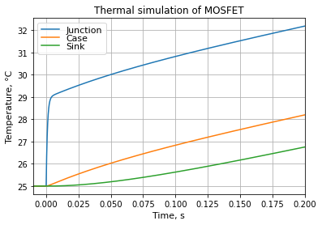

5.6. 电流限制¶
5.6.1. 概述¶
外环控制器（速度控制，例如）命令 q 轴电流，该电流在明确定义的限制处饱和。这些限制可配置，可以是固定的或动态的。当需要短暂峰值暂态电流时，动态电流限制是合适的。
5.6.2. 在电流限制下运行的引申¶
当外环控制器在电流限制处饱和时，它无法再实现其控制目标，而是在不超过电流限制的前提下尽可能接近该目标。
例如，MCAF 速度控制器在达到电流限制时将不再调节速度，而是在控制饱和时命令电流限制。如果速度命令为 3000 RPM，但在 10 A 电流限制下电机只能达到 2400 RPM，则速度控制器将在 2400 RPM 时维持 10 A。
在矢量控制中，恒定的 q 轴电流在宽范围内产生近乎恒定的转矩—因此，在实际应用中，电机速度将由电机转矩与负载转矩之间的平衡决定。如果负载转矩变化并超过电流限制，速度可以相当快地变化。
在电动运行中，当电机转矩与负载转矩平衡时，速度将达到稳定平衡。负载转矩增加会使电机减速，负载转矩减小则允许电机加速，直到外环退出饱和。
在再生运行中，平衡是不稳定的：如果达到电流限制，且仍有外部机械转矩驱动电机轴，则电机将加速直到外部机械转矩减小。对于近乎恒定转矩的负载（例如，附着在传送带或绞车上以受控方式下放的矿石负载），达到转矩限制可能导致失控状况，速度快速增加直到发生机械破坏。
因此，重要的是考虑整个系统并理解电机和负载的预期行为，以选择合适的电流限制。
5.6.3. 动态电流限制¶
电机和功率电子器件中的连续电流限制由热约束决定：具体而言，是电机绕组和晶体管结点的额定温度。在连续电流限制下，电机和晶体管可以无限期运行。但电机和晶体管的热时间常数通常大于暂态转矩需求：这意味着电机和晶体管都有能力在短时间内承受超过连续限制的电流。
一个有用的动态电流限制算法需满足以下几个要求：
在任何给定时间，电流限制 \(I_{\lim}\) 在连续限制和峰值限制之间变化：
\(I_{\mathrm{cont}} \le I_{\lim} \le I_{\mathrm{peak}}\)命令的电机电流矢量的幅值 \(I_{dq,\mathrm{cmd}}\) 应始终保持在电流限制以下；换句话说， \(I_{d,\mathrm{cmd}}{}^2 + I_{q,\mathrm{cmd}}{}^2 \le I_{\lim}{}^2\)
电流限制的动态应受控，以使电机和晶体管保持在其安全工作温度范围内。
MCAF R7 提供了这样的电流限制算法。
5.6.4. 热模型背景¶
热模型和电流限制参数选择的详细描述超出了本文档的范围，但有几个关键原则需要注意。
对于定子绕组，热时间常数通常为几十秒甚至几分钟，在某些应用中，暂态电流超过连续限制 3-5 倍是常见的。
在晶体管中，有三种相关材料：晶体管结点、晶体管外壳和散热器。
结点小而薄，升温很快（通常在毫秒或几十毫秒的数量级），但结点与外壳之间的热阻通常很小；在许多情况下，结点可能只比外壳热几度。
晶体管外壳，尤其是在较大的封装中，如 TO-252 (DPAK)、TO-263 (D²PAK)、TO-220 和 TO-247，包含一个金属标签，其热容足以作为短暂的临时散热器。
外部散热器——如果存在，它提供额外的热容和热量流向环境的路径。（注意：在印制电路板上，带有热通孔的铜管是从 PCB 本身提供至少一些额外热容和导热性的有效方法。参见 AN8826 表面贴装封装 PCB 安装指南 了解更多信息。）
图 5.91 展示了 MOSFET 在时间 \(t=0\)后以恒定功率损耗散热的热仿真。结点到外壳的温度升高到最终值的速度非常快。晶体管外壳和散热器升温较慢。晶体管外壳和散热器的热容允许暂态电流超过连续电流容量。

图 5.91 MOSFET 以 10W 功率散热的热仿真，RθJC = 0.4 K/W。¶
5.6.5. MCAF 中可用的电流限制算法¶
以下是 MCAF 中可用的电流限制算法：
静态电流限制 （无动态电流限制）——维持恒定的连续电流限制，取板级连续电流限制和电机连续电流限制中的较小值
简单电流限制 （“dyn1”）——使用依赖电机电流的一阶模型。
5.6.6. 峰值和连续限制¶
连续和峰值电流限制与所使用的算法无关。
连续电流应根据系统级需求选择，例如，在最高 50°C 环境温度的自然冷却下电机和驱动器连续运行 15 分钟。（在某些情况下，“连续”确实是无限长的时间段，而在其他情况下时间是有限的。）
峰值电流应选择为所有短时约束的最小值，通常包括以下内容：
电机：去磁电流——超过某一点后，定子磁场可能导致转子磁铁的不可逆去磁。
电机：铁芯饱和——超过某一点后，转矩降低且电感减小，导致纹波电流增加。铁芯饱和通常发生在低于去磁电流的电流下。
驱动器：ADC 输入电流饱和——无法控制无法测量的信号
驱动器：硬件电流限制——这应保留用于检测灾难性故障，例如晶体管内部短路或电机某一相对直流母线正极或负极的外部短路
驱动器：栅驱动——超过某一电流后，栅驱动可能无法可靠工作。换句话说，栅驱动应设计和测试为能承受一些不应超过的峰值电流。
5.6.7. 实现说明¶
目前为止，所有版本的 MCAF（R1–R7）仅支持对称电流限制：无论电机正转还是反转，无论电机处于电动还是再生运行，正负电流均施加相同的电流电平。
简单动态电流限制 在 MCAF R7 中添加。
其他实现说明，请参阅每个电流限制选项中的详细信息。